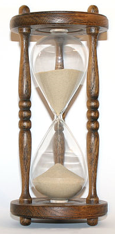

Instruction
Please enter your personal details to enable us to speedily process your application.
An online application works better for you because:
Eligible applicants are guaranteed to get a medical card quickly
The online form will help you submit a correct application
If you are not eligible on income grounds, completion of an online application will determine this for you immediately and we will provide you with an assessment of your application within 15 days.
Remember, if you are over the income guidelines you may still be eligible on a discretionary basis and you should contact your local health office.
The steps are:
Carefully type in the items required on the online form.
Print the application pack at the end of the process. This application pack is provided ONLY if you are eligible based on the income details you have provided.
Sign and return the application pack to the address provided including any documents required
That's it. On receipt of your completed pack and documents the HSE will do the rest.
Important - please read now
Make sure you have relevant details for you and any dependants or spouse/partner to hand before you start to fill in the online form.
<<< PPS numbers >>>
<<< dates of birth >>>
<<< details of income and expenses >>>
This includes income from savings, stocks and shares, and from any rental property or land.

Please also note, for security reasons this online form will time out if it is left unattended.
In total, you have 90 minutes to complete the form, from when you started this session - the clock is ticking now!
Make sure that all of the details entered on the online form are correct before you submit your application.
Only correct applications can be processed online. If your application is not correct it will be returned to you for correction.
You will need access to a printer to print the application pack, in order to view / print the pack you also need Adobe Acrobat Reader installed, which can be downloaded from the link below